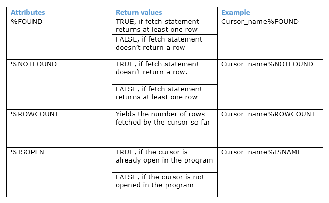
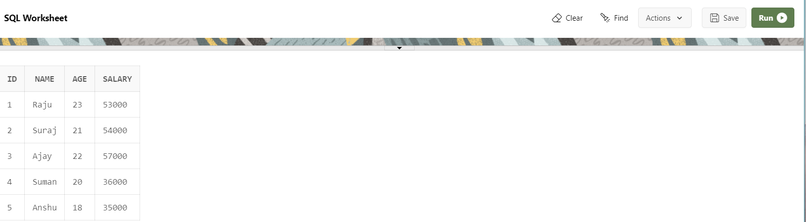
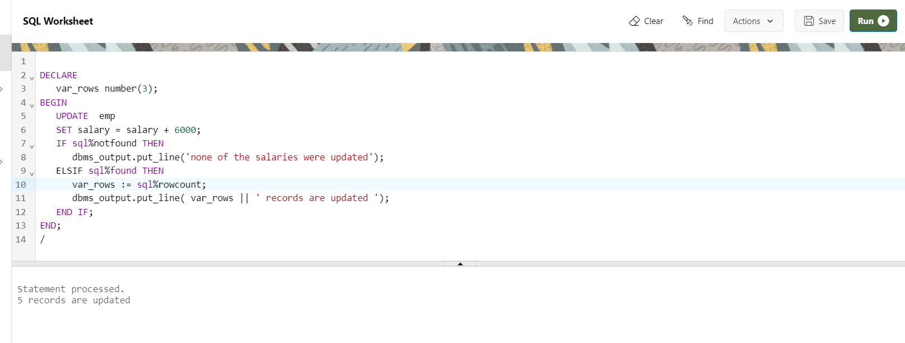
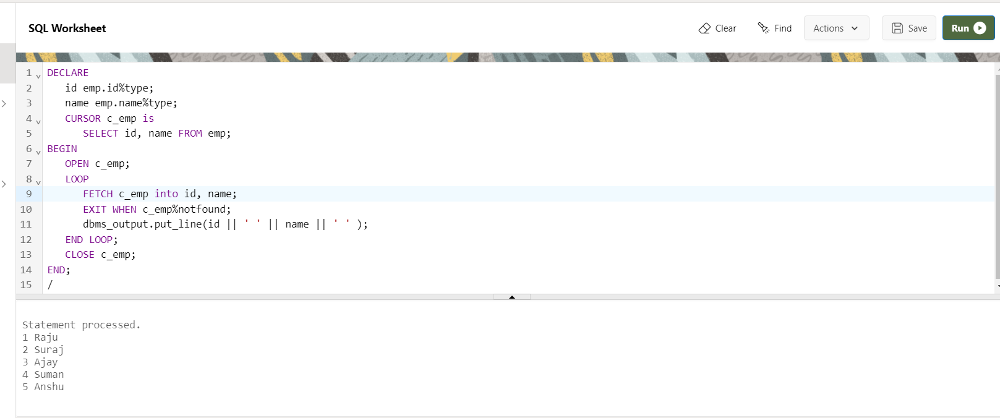

PL/SQL Cursor
When an SQL statement is processed, Oracle creates a memory area known as context area. A cursor is a pointer to this context area. It contains all information needed for processing the statement. In PL/SQL, the context area is controlled by Cursor. A cursor contains information on a select statement and the rows of data accessed by it.
There are two types of cursors
- Implicit Cursors
- Explicit Cursors
1) PL/SQL Implicit Cursors
If the Oracle engine opened a cursor for its internal processing it is known as an Implicit Cursor. It is created “automatically” for the user by Oracle when a query is executed and is simpler to code.
Attribute of Implicit Cursor

Syntax
CURSOR cursor_name IS query;
Table emp:-

Example
DECLARE
var_rows number(3);
BEGIN
UPDATE emp
SET salary = salary + 6000;
IF sql%notfound THEN
dbms_output.put_line('none of the salaries were updated');
ELSIF sql%found THEN
var_rows := sql%rowcount;
dbms_output.put_line( var_rows || ' records are updated ');
END IF;
END;
/

2) PL/SQL Explicit Cursors
A Cursor can also be opened for processing data through a PL/SQL block, on demand. Such a user-defined cursor is known as an Explicit Cursor.
Syntax
CURSOR cursor_name IS select_statement;
cursor_name – A suitable name for the cursor.
select_statement – A select query which returns multiple rows
How to use Explicit Cursor?
- DECLARE the cursor in the Declaration section.
- OPEN the cursor in the Execution Section.
- FETCH the data from the cursor into PL/SQL variables or records in the Execution Section.
- CLOSE the cursor in the Execution Section before you end the PL/SQL Block.
Syntax:
DECLARE variables;
records;
create a cursor;
BEGIN
OPEN cursor;
FETCH cursor;
process the records;
CLOSE cursor;
END;
Table emp:-
Example
DECLARE
id emp.id%type;
name emp.name%type;
CURSOR c_emp is
SELECT id, name FROM emp;
BEGIN
OPEN c_emp;
LOOP
FETCH c_emp into id, name;
EXIT WHEN c_emp%notfound;
dbms_output.put_line(id || ' ' || name || ' ' );
END LOOP;
CLOSE c_emp;
END;
/
